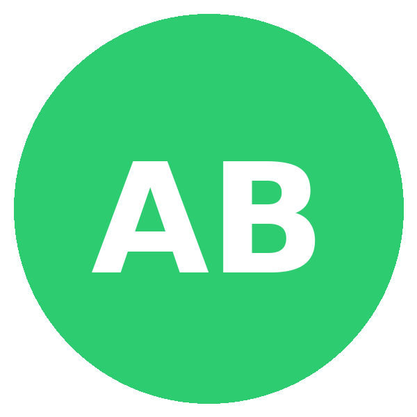

People
Our team
salfordX brings together academics, researchers, students, and partners across energy systems, markets, and society.
Leadership
Professor Vahid Vahidinasab
Director, salfordX
Chair in Sustainability at Salford Business School. Research on consumer-centred flexibility, V2X, and resilient local energy systems.

Centre Co-lead
Theme lead
Interdisciplinary co-lead for research quality and stakeholder engagement.
Advisory Chair
Industry and policy linkage
External adviser from networks/markets/industry, guiding relevance and impact.
Researchers and students

Postdoctoral Researcher
Citizen-led flexibility and market design.
Doctoral Researcher
V2X forecasting and smart charging.
Doctoral Researcher
Dynamic LCA and labels.
Replace placeholders in /assets/people/ with real 600×600 headshots using the same filenames or add new cards.